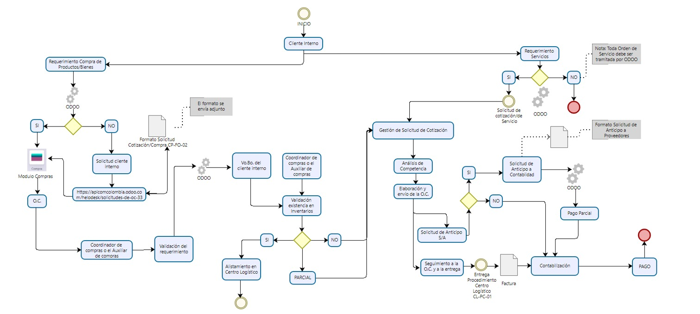

Próximas Fechas
Diagrama de Procesos

Diagrama actualizado - Noviembre 2025
Información
Esta wiki contiene toda la información relevante sobre procesos de compras, importaciones y gestión financiera de NutripLumas S.A.
Presupuestos
Gestión y seguimiento de presupuestos anuales
Importaciones
Control de procesos internacionales
Auditorías
Preparación y documentación